정보처리기사 (2022-03-05 기출문제)
1과목: 소프트웨어 설계
1. User Interface 설계 시 오류 메시지나 경고에 관한 지침으로 가장 거리가 먼 것은?
- 메시지는 이해하기 쉬워야 한다.
- 오류로부터 회복을 위한 구체적인 설명이 제공되어야 한다.
- 오류로 인해 발생 될 수 있는 부정적인 내용을 적극적으로 사용자들에게 알려야 한다.
- 소리나 색의 사용을 줄이고 텍스트로만 전달하도록 한다.
(정답률: 87%)

2. 다음 중 애자일(Agile) 소프트웨어 개발에 대한 설명으로 틀린 것은?
- 공정과 도구보다 개인과의 상호작용을 더 가치 있게 여긴다.
- 동작하는 소프트웨어보다는 포괄적인 문서를 가치 있게 여긴다.
- 계약 협상보다는 고객과의 협력을 가치 있게 여긴다.
- 계획을 따르기보다 변화에 대응하기를 가치 있게 여긴다.
(정답률: 87%)
3. 소프트웨어 설계에서 요구사항 분석에 대한 설명으로 틀린 것은?
- 소프트웨어가 무엇을 해야하는가를 추적하여 요구사항 명세를 작성하는 작업이다.
- 사용자의 요구를 추출하여 목표를 정하고 어떤 방식으로 해결할 것인지 결정하는 단계이다.
- 소프트웨어 시스템이 사용되는 동안 발견되는 오류를 정리하는 단계이다.
- 소프트웨어 개발의 출발점이면서 실질적인 첫 번째 단계이다.
(정답률: 84%)
4. 객체지향 기법에서 상위 클래스의 메소드와 속성을 하위 클래스가 물려받는 것을 의미하는 것은?
- Abstraction
- Polymorphism
- Encapsulation
- Inheritance
(정답률: 78%)
5. 설계 기법 중 하향식 설계 방법과 상향식 설계 방법에 대한 비교 설명으로 가장 옳지 않은 것은?
- 하향식 설계에서는 통합 검사 시 인터페이스가 이미 정의되어 있어 통합이 간단하다.
- 하향식 설계에서 레벨이 낮은 데이터 구조의 세부 사항은 설계초기 단계에서 필요하다.
- 상향식 설계는 최하위 수준에서 각각의 모듈들을 설계하고 이러한 모듈이 완성되면 이들을 결합하여 검사한다.
- 상향식 설계에서는 인터페이스가 이미 성립되어 있지 않더라도 기능 추가가 쉽다.
(정답률: 55%)
6. 자료흐름도(DFD)의 각 요소별 표기 형태의 연결이 옳지 않은 것은?
- Process : 원
- Data Flow : 화살표
- Data Store : 삼각형
- Terminator : 사각형
(정답률: 80%)
7. 소프트웨어 개발에 이용되는 모델(Model)에 대한 설명 중 거리가 먼 것은?
- 모델은 개발 대상을 추상화하고 기호나 그림 등으로 시각적으로 표현한다.
- 모델을 통해 소프트웨어에 대한 이해도를 향상시킬 수 있다.
- 모델을 통해 이해 당사자 간의 의사소통이 향상된다.
- 모델을 통해 향후 개발될 시스템의 유추는 불가능하다.
(정답률: 88%)
8. 다음의 설명에 해당하는 언어는?
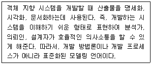
- JAVA
- C
- UML
- Python
(정답률: 79%)
9. 다음 내용이 설명하는 UI설계 도구는?
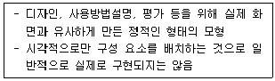
- 스토리보드(Storyboard)
- 목업(Mockup)
- 프로토타입(Prototype)
- 유스케이스(Usecase)
(정답률: 67%)
10. 애자일(Agile) 기법 중 스크럼(Scrum)과 관련된 용어에 대한 설명이 틀린 것은?
- 스크럼 마스터(Scrum Master)는 스크럼 프로세스를 따르고, 팀이 스크럼을 효과적으로 활용할 수 있도록 보장하는 역할 등을 맡는다.
- 제품 백로그(Product Backlog)는 스크럼 팀이 해결해야 하는 목록으로 소프트웨어 요구사항, 아키텍처 정의 등이 포함될 수 있다.
- 스프린트(Sprint)는 하나의 완성된 최종 결과물을 만들기 위한 주기로 3달 이상의 장기간으로 결정된다.
- 속도(Velocity)는 한 번의 스프린트에서 한 팀이 어느 정도의 제품 백로그를 감당할 수 있는지에 대한 추정치로 볼 수 있다.
(정답률: 79%)
11. UML 다이어그램 중 정적 다이어그램이 아닌 것은?
- 컴포넌트 다이어그램
- 배치 다이어그램
- 순차 다이어그램
- 패키지 다이어그램
(정답률: 66%)
12. LOC기법에 의하여 예측된 총 라인수가 36000라인, 개발에 참여할 프로그래머가 6명, 프로그래머들의 평균 생산성이 월간 300라인일 때 개발에 소요되는 기간을 계산한 결과로 가장 옳은 것은?
- 5개월
- 10개월
- 15개월
- 20개월
(정답률: 87%)
13. 클래스 설계원칙에 대한 바른 설명은?
- 단일 책임원칙 : 하나의 클래스만 변경 가능 해야한다.
- 개방-폐쇄의 원칙 : 클래스는 확장에 대해 열려 있어야 하며 변경에 대해 닫혀 있어야 한다.
- 리스코프 교체의 원칙 : 여러 개의 책임을 가진 클래스는 하나의 책임을 가진 클래스로 대체되어야 한다.
- 의존관계 역전의 원칙 : 클라이언트는 자신이 사용하는 메소드와 의존관계를 갖지 않도록 해야 한다.
(정답률: 58%)
14. GoF(Gangs of Four) 디자인 패턴에서 생성(Creational) 패턴에 해당하는 것은?
- 컴퍼지트(Composite)
- 어댑터(Adapter)
- 추상 팩토리(Abstract Factory)
- 옵서버(Observer)
(정답률: 65%)
15. 아키텍처 설계과정이 올바른 순서로 나열된 것은?
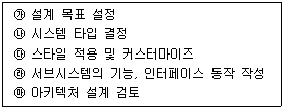
- ㉮ → ㉯ → ㉰ → ㉱ → ㉲
- ㉲ → ㉮ → ㉯ → ㉱ → ㉰
- ㉮ → ㉲ → ㉯ → ㉱ → ㉰
- ㉮ → ㉯ → ㉰ → ㉲ → ㉱
(정답률: 62%)
16. 사용자 인터페이스를 설계할 경우 고려해야 할 가이드라인과 가장 거리가 먼 것은?
- 심미성을 사용성보다 우선하여 설계해야 한다.
- 효율성을 높이게 설계해야 한다.
- 발생하는 오류를 쉽게 수정할 수 있어야 한다.
- 사용자에게 피드백을 제공해야 한다.
(정답률: 85%)
17. 소프트웨어 설계에서 자주 발생하는 문제에 대한 일반적이고 반복적인 해결 방법을 무엇이라고 하는가?
- 모듈 분해
- 디자인 패턴
- 연관 관계
- 클래스 도출
(정답률: 68%)
18. 객체지향 분석기법의 하나로 객체 모형, 동적 모형, 기능 모형의 3개 모형을 생성하는 방법은?
- Wirfs-Block Method
- Rumbaugh Method
- Booch Method
- Jacobson Method
(정답률: 80%)
19. 입력되는 데이터를 컴퓨터의 프로세서가 처리하기 전에 미리 처리하여 프로세서가 처리하는 시간을 줄여주는 프로그램이나 하드웨어를 말하는 것은?
- EAI
- FEP
- GPL
- Duplexing
(정답률: 45%)
20. 객체 지향 개념 중 하나 이상의 유사한 객체들을 묶어 공통된 특성을 표현한 데이터 추상화를 의미하는 것은?
- Method
- Class
- Field
- Message
(정답률: 82%)
2과목: 소프트웨어 개발
21. 클린 코드(Clean Code)를 작성하기 위한 원칙으로 틀린 것은?
- 추상화 : 하위 클래스/메소드/함수를 통해 애플리케이션의 특성을 간략하게 나타내고, 상세 내용은 상위 클래스/메소드/함수에서 구현한다.
- 의존성 : 다른 모듈에 미치는 영향을 최소화하도록 작성한다.
- 가독성 : 누구든지 읽기 쉽게 코드를 작성한다.
- 중복성 : 중복을 최소화 할 수 있는 코드를 작성한다.
(정답률: 73%)
22. 단위 테스트에서 테스트의 대상이 되는 하위 모듈을 호출하고, 파라미터를 전달하는 가상의 모듈로 상향식 테스트에 필요한 것은?
- 테스트 스텁(Test Stub)
- 테스트 드라이버(Test Driver)
- 테스트 슈트(Test Suites)
- 테스트 케이스(Test Case)
(정답률: 61%)
23. 스택(Stack)에 대한 옳은 내용으로만 나열된 것은?
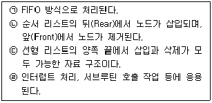
- ㉠, ㉡
- ㉡, ㉢
- ㉣
- ㉠, ㉡, ㉢, ㉣
(정답률: 67%)
24. 소프트웨어 모듈화의 장점이 아닌 것은?
- 오류의 파급 효과를 최소화한다.
- 기능의 분리가 가능하여 인터페이스가 복잡하다.
- 모듈의 재사용 가능으로 개발과 유지보수가 용이하다.
- 프로그램의 효율적인 관리가 가능하다.
(정답률: 85%)
25. 소프트웨어 프로젝트 관리에 대한 설명으로 가장 옳은 것은?
- 개발에 따른 산출물 관리
- 소요인력은 최대화하되 정책 결정은 신속하게 처리
- 주어진 기간은 연장하되 최소의 비용으로 시스템을 개발
- 주어진 기간 내에 최소의 비용으로 사용자를 만족시키는 시스템을 개발
(정답률: 73%)
26. 정형 기술 검토(FTR)의 지침으로 틀린 것은?
- 의제를 제한한다.
- 논쟁과 반박을 제한한다.
- 문제 영역을 명확히 표현한다.
- 참가자의 수를 제한하지 않는다.
(정답률: 65%)
27. 소프트웨어 재공학의 주요 활동 중 기존 소프트웨어 시스템을 새로운 기술 또는 하드웨어 환경에서 사용할 수 있도록 변환하는 작업을 의미하는 것은?
- Analysis
- Migration
- Restructuring
- Reverse Engineering
(정답률: 48%)
28. 정보시스템 개발 단계에서 프로그래밍 언어 선택 시 고려할 사항으로 가장 거리가 먼 것은?
- 개발 정보시스템의 특성
- 사용자의 요구사항
- 컴파일러의 가용성
- 컴파일러의 독창성
(정답률: 78%)
29. 소프트웨어 패키징에 대한 설명으로 틀린 것은?
- 패키징은 개발자 중심으로 진행한다.
- 신규 및 변경 개발소스를 식별하고, 이를 모듈화하여 상용제품으로 패키징한다.
- 고객의 편의성을 위해 매뉴얼 및 버전관리를 지속적으로 한다.
- 범용 환경에서 사용이 가능하도록 일반적인 배포 형태로 패키징이 진행된다.
(정답률: 82%)
30. 자료 구조의 분류 중 선형 구조가 아닌 것은?
- 트리
- 리스트
- 스택
- 데크
(정답률: 73%)
31. 아주 오래되거나 참고문서 또는 개발자가 없어 유지보수 작업이 아주 어려운 프로그램을 의미하는 것은?
- Title Code
- Source Code
- Object Code
- Alien Code
(정답률: 84%)
32. 소프트웨어를 재사용함으로써 얻을 수 있는 이점으로 가장 거리가 먼 것은?
- 생산성 증가
- 프로젝트 문서 공유
- 소프트웨어 품질 향상
- 새로운 개발 방법론 도입 용이
(정답률: 72%)
33. 인터페이스 간의 통신을 위해 이용되는 데이터 포맷이 아닌 것은?
- AJTML
- JSON
- XML
- YAML
(정답률: 43%)
34. 프로그램 설계도의 하나인 NS Chart에 대한 설명으로 가장 거리가 먼 것은?
- 논리의 기술에 중점을 두고 도형을 이용한 표현 방법이다.
- 이해하기 쉽고 코드 변환이 용이하다.
- 화살표나 GOTO를 사용하여 이해하기 쉽다.
- 연속, 선택, 반복 등의 제어 논리 구조를 표현한다.
(정답률: 55%)
35. 순서가 A, B, C, D로 정해진 입력자료를 push, push, pop, push, push, pop, pop, pop 순서로 스택연산을 수행하는 경우 출력 결과는?
- B D C A
- A B C D
- B A C D
- A B D C
(정답률: 68%)
36. 분할 정복(Divide and Conquer)에 기반한 알고리즘으로 피벗(pivot)을 사용하며 최악의 경우
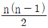
회의 비교를 수행해야 하는 정렬(Sort)은?- Selection Sort
- Bubble Sort
- Insert Sort
- Quick Sort
(정답률: 53%)
37. 화이트 박스 검사 기법에 해당하는 것으로만 짝지어진 것은?
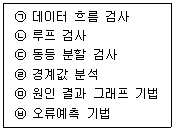
- ㉠, ㉡
- ㉠, ㉣
- ㉡, ㉤
- ㉢, ㉥
(정답률: 67%)
38. 소프트웨어 품질 관련 국제 표준인 ISO/IEC 25000에 관한 설명으로 옳지 않은 것은?
- 소프트웨어 품질 평가를 위한 소프트웨어 품질평가 통합모델 표준이다.
- System and Software Quality Requirements and Evaluation으로 줄여서 SQuaRE라고도 한다.
- ISO/IEC 2501n에서는 소프트웨어의 내부 측정, 외부측정, 사용품질 측정, 품질 측정 요소 등을 다룬다.
- 기존 소프트웨어 품질 평가 모델과 소프트웨어 평가 절차 모델인 ISO/IEC 9126과 ISO/IEC 14598을 통합하였다.
(정답률: 47%)
39. 코드 인스펙션과 관련한 설명으로 틀린 것은?
- 프로그램을 수행시켜보는 것 대신에 읽어보고 눈으로 확인하는 방법으로 볼 수 있다.
- 코드 품질 향상 기법 중 하나이다.
- 동적 테스트 시에만 활용하는 기법이다.
- 결함과 함께 코딩 표준 준수 여부, 효율성 등의 다른 품질 이슈를 검사하기도 한다.
(정답률: 69%)
40. 프로젝트에 내재된 위험 요소를 인식하고 그 영향을 분석하여 이를 관리하는 활동으로서, 프로젝트를 성공시키기 위하여 위험 요소를 사전에 예측, 대비하는 모든 기술과 활동을 포함하는 것은?
- Critical Path Method
- Risk Analysis
- Work Breakdown Structure
- Waterfall Model
(정답률: 78%)
3과목: 데이터베이스 구축
41. 데이터베이스 설계 단계 중 물리적 설계 시 고려 사항으로 적절하지 않은 것은?
- 스키마의 평가 및 정제
- 응답 시간
- 저장 공간의 효율화
- 트랜잭션 처리량
(정답률: 69%)
42. DELETE 명령에 대한 설명으로 틀린 것은?
- 테이블의 행을 삭제할 때 사용한다.
- WHERE 조건절이 없는 DELETE 명령을 수행하면 DROP TABLE 명령을 수행했을 때와 동일한 효과를 얻을 수 있다.
- SQL을 사용 용도에 따라 분류할 경우 DML에 해당한다.
- 기본 사용 형식은 “DELETE FROM 테이블 [WHERE 조건];” 이다.
(정답률: 70%)
43. 어떤 릴레이션 R의 모든 조인 종속성의 만족이 R의 후보 키를 통해서만 만족될 때, 이 릴레이션 R이 해당하는 정규형은?
- 제5정규형
- 제4정규형
- 제3정규형
- 제1정규형
(정답률: 61%)
44. E-R 모델에서 다중값 속성의 표기법은?
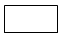
(정답률: 78%)
45. 다른 릴레이션의 기본키를 참조하는 키를 의미하는 것은?
- 필드키
- 슈퍼키
- 외래키
- 후보키
(정답률: 74%)
46. 관계해석에서 '모든 것에 대하여'의 의미를 나타내는 논리 기호는?
- ∃
- ∈
- ∀
- ⊂
(정답률: 67%)
47. 다음 릴레이션의 Degree와 Cardinality는?
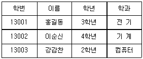
- Degree : 4, Cardinality : 3
- Degree : 3, Cardinality : 4
- Degree : 3, Cardinality : 12
- Degree : 12, Cardinality : 3
(정답률: 64%)
48. 뷰(View)에 대한 설명으로 틀린 것은?
- 뷰 위에 또 다른 뷰를 정의할 수 있다.
- DBA는 보안성 측면에서 뷰를 활용할 수 있다.
- 사용자가 필요한 정보를 요구에 맞게 가공하여 뷰로 만들 수 있다.
- SQL을 사용하면 뷰에 대한 삽입, 갱신, 삭제 연산 시 제약 사항이 없다.
(정답률: 77%)
49. 관계 대수식을 SQL 질의로 옳게 표현한 것은?
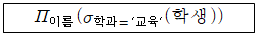
- SELECT 학생 FROM 이름 WHERE 학과='교육';
- SELECT 이름 FROM 학생 WHERE 학과='교육';
- SELECT 교육 FROM 학과 WHERE 이름='학생';
- SELECT 학과 FROM 학생 WHERE 이름='교육';
(정답률: 67%)
50. 정규화 과정에서 함수 종속이 A→B 이고 B→C 일 때 A→C인 관계를 제거하는 단계는?
- 1NF → 2NF
- 2NF → 3NF
- 3NF → BCNF
- BCNF → 4NF
(정답률: 58%)
51. CREATE TABLE문에 포함되지 않는 기능은?
- 속성 타입 변경
- 속성의 NOT NULL 여부 지정
- 기본키를 구성하는 속성 지정
- CHECK 제약조건의 정의
(정답률: 57%)
52. SQL과 관련한 설명으로 틀린 것은?
- REVOKE 키워드를 사용하여 열 이름을 다시 부여할 수 있다.
- 데이터 정의어는 기본 테이블, 뷰 테이블, 또는 인덱스 등을 생성, 변경, 제거하는데 사용되는 명령어이다.
- DISTINCT를 활용하여 중복 값을 제거할 수 있다.
- JOIN을 통해 여러 테이블의 레코드를 조합하여 표현할 수 있다.
(정답률: 67%)
53. 다음 SQL문의 실행결과로 생성되는 튜플 수는?
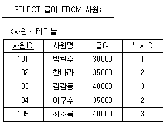
- 1
- 3
- 4
- 5
(정답률: 75%)
54. 다음 SQL문에서 사용된 BETWEEN 연산의 의미와 동일한 것은?
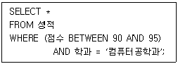
- 점수 ＞= 90 AND 점수 ＜= 95
- 점수 ＞ 90 AND 점수 ＜ 95
- 점수 ＞ 90 AND 점수 ＜= 95
- 점수 ＞= 90 AND 점수 ＜ 95
(정답률: 73%)
55. 트랜잭션의 상태 중 트랜잭션의 수행이 실패하여 Rollback 연산을 실행한 상태는?
- 철회(Aborted)
- 부분 완료(Partially Committed)
- 완료(Commit)
- 실패(Fail)
(정답률: 69%)
56. 데이터 제어어(DCL)에 대한 설명으로 옳은 것은?
- ROLLBACK : 데이터의 보안과 무결성을 정의한다.
- COMMIT : 데이터베이스 사용자의 사용 권한을 취소한다.
- GRANT : 데이터베이스 사용자의 사용 권한을 부여한다.
- REVOKE : 데이터베이스 조작 작업이 비정상적으로 종료되었을 때 원래 상태로 복구한다.
(정답률: 76%)
57. 테이블 R과 S에 대한 SQL에 대한 SQL문이 실행되었을 때, 실행결과로 옳은 것은?
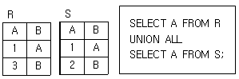
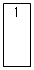
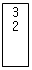
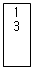
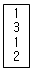
(정답률: 73%)
58. 분산 데이터베이스 시스템(Distributed Database System)에 대한 설명으로 틀린 것은?
- 분산 데이터베이스는 논리적으로는 하나의 시스템에 속하지만 물리적으로는 여러 개의 컴퓨터 사이트에 분산되어 있다.
- 위치 투명성, 중복 투명성, 병행 투명성, 장애 투명성을 목표로 한다.
- 데이터베이스의 설계가 비교적 어렵고, 개발 비용과 처리 비용이 증가한다는 단점이 있다.
- 분산 데이터베이스 시스템의 주요 구성 요소는 분산 처리기, P2P 시스템, 단일 데이터베이스 등이 있다.
(정답률: 49%)
59. 테이블 두 개를 조인하여 뷰 V_1을 정의하고, V_1을 이용하여 뷰 V_2를 정의하였다. 다음 명령 수행 후 결과로 옳은 것은?
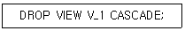
- V_1만 삭제된다.
- V_2만 삭제된다.
- V_1과 V_2 모두 삭제된다.
- V_1과 V_2 모두 삭제되지 않는다.
(정답률: 73%)
60. 데이터베이스에서 병행제어의 목적으로 틀린 것은?
- 시스템 활용도 최대화
- 사용자에 대한 응답시간 최소화
- 데이터베이스 공유 최소화
- 데이터베이스 일관성 유지
(정답률: 70%)
4과목: 프로그래밍 언어 활용
61. IP 주소체계와 관련한 설명으로 틀린 것은?
- IPv6의 패킷 헤더는 32 octet의 고정된 길이를 가진다.
- IPv6는 주소 자동설정(Auto Configuration) 기능을 통해 손쉽게 이용자의 단말을 네트워크에 접속시킬 수 있다.
- IPv4는 호스트 주소를 자동으로 설정하며 유니캐스트(Unicast)를 지원한다.
- IPv4는 클래스별로 네트워크와 호스트 주소의 길이가 다르다.
(정답률: 57%)
62. 다음 C언어 프로그램이 실행되었을 때, 실행 결과는?
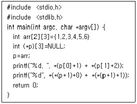
- 7, 5
- 8, 5
- 8, 9
- 7, 9
(정답률: 42%)
63. OSI 7계층 중 데이터링크 계층에 해당되는 프로토콜이 아닌 것은?
- HTTP
- HDLC
- PPP
- LLC
(정답률: 62%)
64. C언어에서 두 개의 논리 값 중 하나라도 참이면 1을, 모두 거짓이면 0을 반환하는 연산자는?
- ||
- &&
- **
- !=
(정답률: 73%)
65. IPv6에 대한 특성으로 틀린 것은?
- 표시방법은 8비트씩 4부분의 10진수로 표시한다.
- 2128개의 주소를 표현할 수 있다.
- 등급별, 서비스별로 패킷을 구분할 수 있어 품질보장이 용이하다.
- 확장기능을 통해 보안기능을 제공한다.
(정답률: 69%)
66. JAVA의 예외(exception)와 관련한 설명으로 틀린 것은?
- 문법 오류로 인해 발생한 것
- 오동작이나 결과에 악영향을 미칠 수 있는 실행 시간 동안에 발생한 오류
- 배열의 인덱스가 그 범위를 넘어서는 경우 발생하는 오류
- 존재하지 않는 파일을 읽으려고 하는 경우에 발생하는 오류
(정답률: 55%)
67. TCP/IP 계층 구조에서 IP의 동작 과정에서의 전송 오류가 발생하는 경우에 대비해 오류 정보를 전송하는 목적으로 사용하는 프로토콜은?
- ECP(Error Checking Protocol)
- ARP(Address Resolution Protocol)
- ICMP(Internet Control Message Protocol)
- PPP(Point-to-Point Protocol)
(정답률: 42%)
68. 좋은 소프트웨어 설계를 위한 소프트웨어의 모듈간의 결합도(Coupling)와 모듈 내 요소 간 응집도(Cohesion)에 대한 설명으로 옳은 것은?
- 응집도는 낮게 결합도는 높게 설계한다.
- 응집도는 높게 결합도는 낮게 설계한다.
- 양쪽 모두 낮게 설계한다.
- 양쪽 모두 높게 설계한다.
(정답률: 71%)
69. 다음과 같은 형태로 임계 구역의 접근을 제어하는 상호배제 기법은?
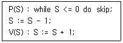
- Dekker Algorithm
- Lamport Algorithm
- Peterson Algorithm
- Semaphore
(정답률: 47%)
70. 소프트웨어 개발에서 모듈(Module)이 되기 위한 주요 특징에 해당하지 않는 것은?
- 다른 것들과 구별될 수 있는 독립적인 기능을 가진 단위(Unit)이다.
- 독립적인 컴파일이 가능하다.
- 유일한 이름을 가져야 한다.
- 다른 모듈에서의 접근이 불가능해야 한다.
(정답률: 73%)
71. 빈 기억공간의 크기가 20KB, 16KB, 8KB, 40KB 일 때 기억장치 배치 전략으로 “Best Fit"을 사용하여 17KB의 프로그램을 적재할 경우 내부단편화의 크기는 얼마인가?
- 3KB
- 23KB
- 64KB
- 67KB
(정답률: 73%)
72. 다음 C언어프로그램이 실행되었을 때, 실행 결과는?
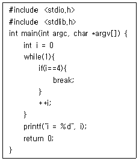
- i = 0
- i = 1
- i = 3
- i = 4
(정답률: 68%)
73. 다음 JAVA 프로그램이 실행되었을 때, 실행 결과는?
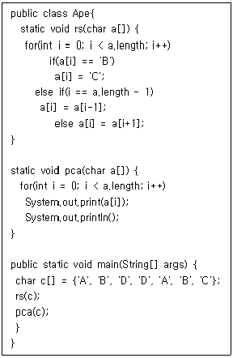
- BCDABCA
- BCDABCC
- CDDACCC
- CDDACCA
(정답률: 54%)
74. 개발 환경 구성을 위한 빌드(Build) 도구에 해당하지 않는 것은?
- Ant
- Kerberos
- Maven
- Gradle
(정답률: 63%)
75. 3개의 페이지 프레임을 갖는 시스템에서 페이지 참조 순서가 1, 2, 1, 0, 4, 1, 3 일 경우 FIFO 알고리즘에 의한 페이지 교체의 경우 프레임의 최종 상태는?
- 1, 2, 0
- 2, 4, 3
- 1, 4, 2
- 4, 1, 3
(정답률: 66%)
76. 다음 C언어 프로그램이 실행되었을 때, 실행 결과는?
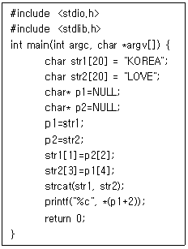
- E
- V
- R
- O
(정답률: 47%)
77. 다음 Python 프로그램이 실행되었을 때, 실행 결과는?
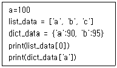
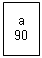
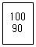
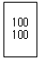
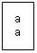
(정답률: 74%)
78. C언어에서 정수 변수 a, b에 각각 1, 2가 저장되어 있을 때 다음 식의 연산 결과로 옳은 것은?
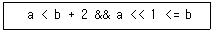
- 0
- 1
- 3
- 5
(정답률: 53%)
79. 다음 Python 프로그램이 실행되었을 때, 실행 결과는?
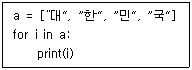
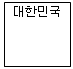
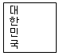
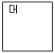
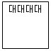
(정답률: 62%)
80. UNIX 시스템의 쉘(shell)의 주요 기능에 대한 설명이 아닌 것은?
- 사용자 명령을 해석하고 커널로 전달하는 기능을 제공한다.
- 반복적인 명령 프로그램을 만드는 프로그래밍 기능을 제공한다.
- 쉘 프로그램 실행을 위해 프로세스와 메모리를 관리한다.
- 초기화 파일을 이용해 사용자 환경을 설정하는 기능을 제공한다.
(정답률: 42%)
5과목: 정보시스템 구축관리
81. 소프트웨어 생명주기 모델 중 나선형 모델(Spiral Model)과 관련한 설명으로 틀린 것은??
- 소프트웨어 개발 프로세스를 위험 관리(Risk Management) 측면에서 본 모델이다.
- 위험 분석(Risk Analysis)은 반복적인 개발 진행 후 주기의 마지막 단계에서 최종적으로 한 번 수행해야 한다.
- 시스템을 여러 부분으로 나누어 여러 번의 개발 주기를 거치면서 시스템이 완성된다.
- 요구사항이나 아키텍처를 이해하기 어렵다거나 중심이 되는 기술에 문제가 있는 경우 적합한 모델이다.
(정답률: 68%)
82. 정보시스템과 관련한 다음 설명에 해당하는 것은?
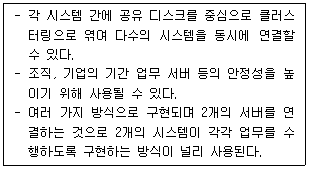
- 고가용성 솔루션(HACMP)
- 점대점 연결 방식(Point-to-Point Mode)
- 스턱스넷(Stuxnet)
- 루팅(Rooting)
(정답률: 47%)
83. 위조된 매체 접근 제어(MAC) 주소를 지속적으로 네트워크로 흘려보내, 스위치 MAC 주소 테이블의 저장 기능을 혼란시켜 더미 허브(Dummy Hub)처럼 작동하게 하는 공격은?
- Parsing
- LAN Tapping
- Switch Jamming
- FTP Flooding
(정답률: 54%)
84. 다음 내용이 설명하는 스토리지 시스템은?
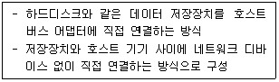
- DAS
- NAS
- BSA
- NFC
(정답률: 63%)
85. 취약점 관리를 위해 일반적으로 수행하는 작업이 아닌 것은?
- 무결성 검사
- 응용 프로그램의 보안 설정 및 패치(Patch) 적용
- 중단 프로세스 및 닫힌 포트 위주로 확인
- 불필요한 서비스 및 악성 프로그램의 확인과 제거
(정답률: 74%)
86. 소프트웨어 생명주기 모델 중 V 모델과 관련한 설명으로 틀린 것은?
- 요구 분석 및 설계단계를 거치지 않으며 항상 통합 테스트를 중심으로 V 형태를 이룬다.
- Perry에 의해 제안되었으며 세부적인 테스트 과정으로 구성되어 신뢰도 높은 시스템을 개발하는데 효과적이다.
- 개발 작업과 검증 작업 사이의 관계를 명확히 들어내 놓은 폭포수 모델의 변형이라고 볼 수 있다.
- 폭포수 모델이 산출물 중심이라면 V 모델은 작업과 결과의 검증에 초점을 둔다.
(정답률: 54%)
87. 블루투스(Bluetooth) 공격과 해당 공격에 대한 설명이 올바르게 연결된 것은?
- 블루버그(BlueBug) - 블루투스의 취약점을 활용하여 장비의 파일에 접근하는 공격으로 OPP를 사용하여 정보를 열람
- 블루스나프(BlueSnarf) - 블루투스를 이용해 스팸처럼 명함을 익명으로 퍼뜨리는 것
- 블루프린팅(BluePrinting) - 블루투스 공격 장치의 검색 활동을 의미
- 블루재킹(BlueJacking) - 블루투스 장비사이의 취약한 연결 관리를 악용한 공격
(정답률: 44%)
88. DoS(Denial of Service) 공격과 관련한 내용으로 틀린 것은?
- Ping of Death 공격은 정상 크기보다 큰 ICMP 패킷을 작은 조각(Fragment)으로 쪼개어 공격 대상이 조각화 된 패킷을 처리하게 만드는 공격 방법이다.
- Smurf 공격은 멀티캐스트(Multicast)를 활용하여 공격 대상이 네트워크의 임의의 시스템에 패킷을 보내게 만드는 공격이다.
- SYN Flooding은 존재하지 않는 클라이언트가 서버별로 한정된 접속 가능 공간에 접속한 것처럼 속여 다른 사용자가 서비스를 이용하지 못하게 하는 것이다.
- Land 공격은 패킷 전송 시 출발지 IP주소와 목적지 IP주소 값을 똑같이 만들어서 공격 대상에게 보내는 공격 방법이다.
(정답률: 38%)
89. 다음 설명에 해당하는 시스템은?
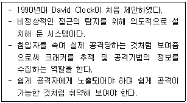
- Apache
- Hadoop
- Honeypot
- MapReduce
(정답률: 64%)
90. 다음이 설명하는 IT 기술은?
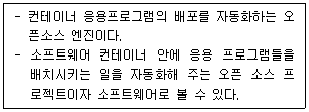
- StackGuard
- Docker
- Cipher Container
- Scytale
(정답률: 53%)
91. 간트 차트(Gantt Chart)에 대한 설명으로 틀린 것은?
- 프로젝트를 이루는 소작업 별로 언제 시작되고 언제 끝나야 하는지를 한 눈에 볼 수 있도록 도와준다.
- 자원 배치 계획에 유용하게 사용된다.
- CPM 네트워크로부터 만드는 것이 가능하다.
- 수평 막대의 길이는 각 작업(Task)에 필요한 인원수를 나타낸다.
(정답률: 64%)
92. Python 기반의 웹 크롤링(Web Crawling) 프레임워크로 옳은 것은?
- Li-fi
- Scrapy
- CrawlCat
- SBAS
(정답률: 47%)
93. Secure 코딩에서 입력 데이터의 보안 약점과 관련한 설명으로 틀린 것은?
- SQL 삽입 : 사용자의 입력 값 등 외부 입력 값이 SQL 쿼리에 삽입되어 공격
- 크로스사이트 스크립트 : 검증되지 않은 외부 입력 값에 의해 브라우저에서 악의적인 코드가 실행
- 운영체제 명령어 삽입 : 운영체제 명령어 파라미터 입력 값이 적절한 사전검증을 거치지 않고 사용되어 공격자가 운영체제 명령어를 조작
- 자원 삽입 : 사용자가 내부 입력 값을 통해 시스템 내에 사용이 불가능한 자원을 지속적으로 입력함으로써 시스템에 과부하 발생
(정답률: 43%)
94. Windows 파일 시스템인 FAT와 비교했을 때의 NTFS의 특징이 아닌 것은?
- 보안에 취약
- 대용량 볼륨에 효율적
- 자동 압축 및 안정성
- 저용량 볼륨에서의 속도 저하
(정답률: 51%)
95. DES는 몇 비트의 암호화 알고리즘인가?
- 8
- 24
- 64
- 132
(정답률: 66%)
96. 리눅스에서 생성된 파일 권한이 644일 경우 umask 값은?
- 022
- 666
- 777
- 755
(정답률: 49%)
97. 다음 내용이 설명하는 로그 파일은?
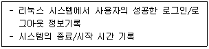
- tapping
- xtslog
- linuxer
- wtmp
(정답률: 41%)
98. 상향식 비용 산정 기법 중 LOC(원시 코드 라인 수) 기법에서 예측치를 구하기 위해 사용하는 항목이 아닌 것은?
- 낙관치
- 기대치
- 비관치
- 모형치
(정답률: 62%)
99. OSI 7 Layer 전 계층의 프로토콜과 패킷 내부의 콘텐츠를 파악하여 침입 시도, 해킹 등을 탐지하고 트래픽을 조정하기 위한 패킷 분석 기술은?
- PLCP(Packet Level Control Processor)
- Traffic Distributor
- Packet Tree
- DPI(Deep Packet Inspection)
(정답률: 46%)
100. 소프트웨어 개발 방법론의 테일러링(Tailoring)과 관련한 설명으로 틀린 것은?
- 프로젝트 수행 시 예상되는 변화를 배제하고 신속히 진행하여야 한다.
- 프로젝트에 최적화된 개발 방법론을 적용하기 위해 절차, 산출물 등을 적절히 변경하는 활동이다.
- 관리 측면에서의 목적 중 하나는 최단기간에 안정적인 프로젝트 진행을 위한 사전 위험을 식별하고 제거하는 것이다.
- 기술적 측면에서의 목적 중 하나는 프로젝트에 최적화된 기술 요소를 도입하여 프로젝트 특성에 맞는 최적의 기법과 도구를 사용하는 것이다.
(정답률: 55%)